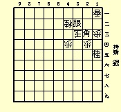
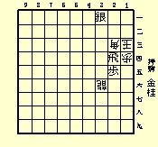
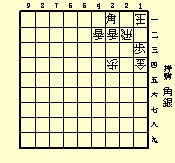
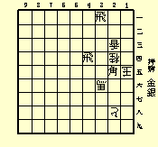
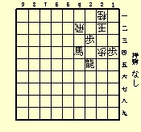
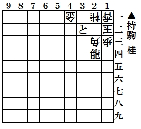
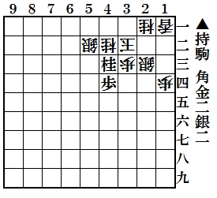
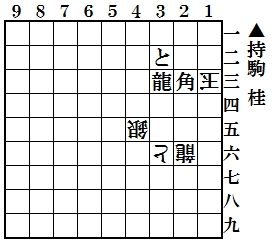
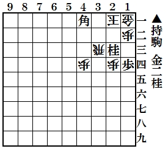
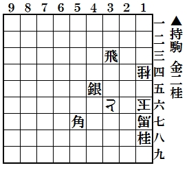

随想コーナー
私の思うまま随想
【 お知らせ掲示板 】
・解答締切日は毎月末日
・ＨＰは毎月８日更新
・解答など発表は翌々月
投稿作品募集中
詰将棋保存会のお知らせ
年報2012年版完成
情報提供のお願い
解けうれQRコード
解けてうれしい詰将棋
投稿作問題 ５月号 解答・感想
問題１ 13/14（正解/応募）
【出題】登場９８回 東京都 大森 常一 様
【解答】２二銀、同玉、１四角成まで３手必至。
【解答者寸評】 ※は事務局コメント
坂本栄治郎様 玉の誘い込み見事。
※実戦で発見できたら嬉しい手順ですね。
問題２ 14/14（正解/応募）
【出題】登場９９回 東京都 大森 常一 様
【解答】１五桂まで１手必至。
【解答者寸評】 ※は事務局コメント
占魚亭様 飛車を支援。
※易しめの問題でした。
問題３ 12/14（正解/応募）
【出題】登場３回 横浜市 松岡 信行 様
【解答】１二銀、同飛、３三角、同香、１二歩成、同玉、３二飛、２三玉、２二飛成まで９手詰。
【解答者寸評】 ※は事務局コメント
大野 孝様 ここに角を打ってという顔をしていますね。
※３三角の一手必至解がありました。筋ですが惜しい。
問題４ 14/14（正解/応募）
【出題】 登場２６回 甲斐市 門田 和雄 様
【解答】１六金、同桂、２六銀、同馬、１四飛、２五玉、３四飛成まで７手詰。
【解答者寸評】 ※は事務局コメント
蜂須賀久雄様 手が限られているのでわかりやすいです。
※最終引成の解答多数ありましたが１四の飛は成れないので不要かと・・・。
問題５ 13/14（正解/応募）
【出題】登場３０回 堺市 柴田 昭彦 様
【解答】３二歩成、２三玉、１三歩成、同玉、１五竜、２三玉、１二竜、同玉、２二馬まで９手詰。
【解答者寸評】 ※は事務局コメント
高見秀夫様 「解けうれにピッタリ」座布団一枚。
※１０枚貯まるとものすご～い賞品が（笑）。
【当選者】 占魚亭 様
【全問正解者】 １１名
中村義夫様、小川恒夫様、本多正勝様、
高見秀夫様、坂本栄治郎様、木村良一様、
鈴木康弘様、蜂須賀久雄様、大野 孝様、
占魚亭様、野中正義様
投稿作問題 ４月号 解答・感想
問題１ 19/19（正解/応募）
【出題】 出題 編集部
【解答】３三龍まで１手必至。
【解答者寸評】 ※は事務局コメント
鈴木康弘様 絵に描いたようなダブル詰めろ必至。
※実戦でさせるだろうか？のご意見も多数ありました。
問題２ 18/19（正解/応募）
【出題】登場３回 京都市 岩崎 柊典 様
【解答】４一銀、同銀、２二金、同玉、３一角、１二玉、１三銀、同桂、２二金 まで９手詰。
【解答者寸評】 ※は事務局コメント
高見秀夫様 持駒にウンザリ、手順はアッサリ。
※初手の後は一本道ですね。
問題３ 18/19（正解/応募）
【出題】登場１６５回 高岡市 藤井 憲郎 様
【解答】２五桂、同龍、２二龍、２四玉、３四角成、同玉、３三龍まで７手詰。
【解答者寸評】 ※は事務局コメント
大野 孝様 最後の形は？
※一輪挿しかフラスコでしょうか？龍のスイッチバックが好評でした。
問題４ 19/19（正解/応募）
【出題】 登場１６６回 高岡市 藤井 憲郎 様
【解答】３一金、２二玉、３四桂、同飛、３二金打、２三玉、３三金、同玉、３二角成 まで９手詰。
【解答者寸評】 ※は事務局コメント
玉木英幸様 一回解けたのに回答作成時にまたわからなくなりました。
※重い金の重ね打ちが好評でした。
問題５ 17/19（正解/応募）
【出題】 登場２４回 甲斐市 門田 和雄 様
【解答】１五金、同玉、２四角、同玉、３四飛成、１五玉、２七桂、１六玉、２五龍、同玉、１五金まで１１手詰。
【解答者寸評】 ※は事務局コメント
占魚亭 様 １５金に始まり１５金に終わる。傍観する守備陣が哀れ。
※１５金～１５金は作為か僥倖か。２五龍の味と合わせて好評でした。
【当選者】 森田 茂 様
【全問正解者】 １７名
玉木英幸様、森田 茂様、中村義夫様、
小川恒夫様、木村良一様、野中正義様、
大沼 貴様、坂本栄治郎様、高見秀夫様、
本多正勝様、蜂須賀久雄様、石川 浩様、
鈴木康弘様、占魚亭様、門田和雄様、
國吉 進様、田野保 幸平様